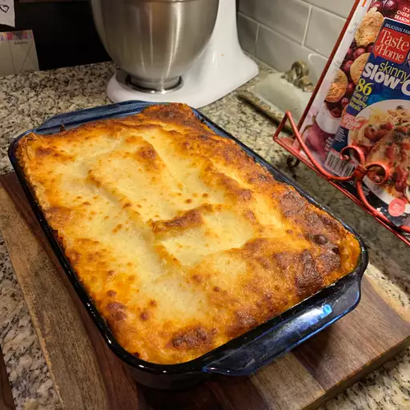

Cheese Lasagna

Description
An easy to make recipe for Cheese Lasagna. In this recipe, we're using
three different cheeses to create this mouthwatering vegetarian treat.
Your guests will love this meal, and you'll love making it! Let's get started.
- Prep Time: 20 mins
- Cook Time: 45 mins
- Total Time: 1 hr 5 mins
- Yeild: 1 9x13-inch lasagna
- Servings: 8
Ingredients
- 1 package lasagna noodles
- 4 cups ricotta cheese
- 4 eggs
- 1/4 cup grates Parmesan cheese
- salt and pepper to taste
- 1 teaspoon olive oil
- 3 cloves garlic, minced
- 1 (1kg) jar pasta sauce
- 1 teaspoon Italian seasoning
- 2 cups shredded mozzarella cheese
Steps
- Preheat your oven to 175 degrees C.
- Bring a large pot of lightly salted water to a boil. Add lasagna sheets
and cook for 8 to 10 minutes or until al dente; drain and lay noodles flat
on foil to cool.
- Mix ricotta, eggs, Parmesan cheese, salt, and pepper together in a bowl.
- Heat oil in a medium saucepan over medium heat; add garlic and sauté 2 minutes.
Stir in spaghetti sauce and Italian seasoning until warmed through, stirring
occasionally, 2 to 5 minutes.
- Spread 1/2 cup of sauce on the bottom of a 9x13-inch baking dish. Cover with a
layer of noodles. Spread 1/2 of the ricotta mixture over noodles; top with another
layer of noodles. Pour 1 1/2 cups of sauce over noodles and spread the remaining
ricotta over the sauce. Top with remaining noodles and sauce; sprinkle with remaining
mozzarella. Cover with a greased sheet of foil.
- Bake in the preheated oven until cheese is melted and bubbly, about 45 minutes.